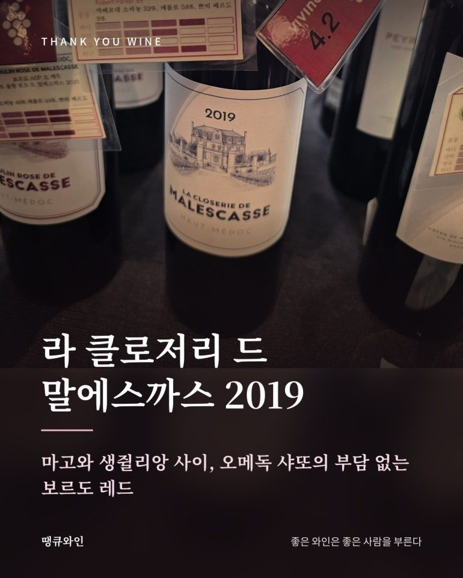

라 클로저리 드 말에스까스 2019
마고와 생쥘리앙 사이, 오메독 샤또의 부담 없는 보르도 레드
라 클로저리 드 말에스까스 2019는 마고와 생쥘리앙 사이 오메독 샤또가 만든, 지금 마시기 딱 좋게 익은 2019 보르도예요.
보르도 레드를 고를 때 가장 어려운 건 늘 같은 질문입니다.
“이름 있는 샤또는 부담스럽고, 아무 보르도나 사기엔 불안한데… 그 사이 한 병은 없을까?”
지난 10월 19일, 한 와인 수입사의 10주년 그랜드 테이스팅에서 그 답에 가까운 와인을 하나 만났습니다.
오늘 소개할 라 클로저리 드 말에스까스 2019입니다.
시음회에서 수십 종을 맛보는 동안 메모장에 ‘향도 좋고 꽤 괜찮다’라고 적어 둔 몇 안 되는 레드였습니다.
무엇보다 중요한 포인트는 바로,
마고와 생쥘리앙 사이 오메독 샤또가 만든, 지금 마시기 딱 좋게 익은 2019 보르도라는 것.

한눈에 보는 라 클로저리 드 말에스까스
- 생산자
- 샤또 말에스까스(Château Malescasse)
- 산지
- 프랑스 · 보르도 · 오메독(Haut-Médoc AOC), 라마르크 마을
- 품종
- 메를로 58%, 까베르네 소비뇽 33%, 쁘띠 베르도 9%
- 빈티지
- 2019
- 평가
- 로버트 파커 89점, 비비노 4.2
- 이런 분께
- 정통 보르도 레드를 편하게 매일 즐기고 싶은 분
- 샤또 말에스까스 2018
- 더 진하고 숙성된 맛, 선물용 프리미엄 보르도
- 르 물랑 로즈 2020
- 산도와 타닌이 아직 살아 있어 조금 더 기다리면 좋을 와인
- 라 클로저리 2019
- 향이 좋고 지금 마시기 가장 편안한 와인
- 산지
- 프랑스 · 보르도 · 오메독
- 품종
- 메를로 58%, 까베르네 소비뇽 33%, 쁘띠 베르도 9%
- 스타일
- 미디엄 바디 드라이 레드
- 주요 풍미
- 블랙체리, 자두, 삼나무, 은은한 오크
- 소고기
- 소불고기, 한우 등심 구이, 떡갈비
- 돼지고기
- 수육, 돼지갈비
- 양식
- 스테이크, 라자냐, 버섯 리조또
- 치즈
- 숙성 고다, 콩테
- 구매처
- 성수동 땡큐와인 매장 · 카톡으로 입고·가격 1:1 안내
자주 묻는 질문
세컨드 와인은 품질이 떨어지나요?
같은 포도밭과 같은 양조팀이 만들고, 일찍 마시기 좋은 포도를 골라 만든 와인이라 ‘격이 낮다’기보다 ‘스타일이 다르다’에 가깝습니다.
지금 마셔도 괜찮을까요?
2019 빈티지라 이미 부드럽게 풀려 있습니다. 잔에서 15분 정도 두면 향이 더 열립니다.
몇 도로 마시면 좋을까요?
16~18도가 좋습니다. 실온에 있던 와인이라면 냉장고에 15분 정도 넣었다가 따라 보세요.
결국 이 와인의 매력은 ‘지금’입니다
라 클로저리 드 말에스까스는 오래 기다릴 필요 없이, 오늘 저녁 바로 열어도 보르도다운 기본기를 보여주는 와인입니다. 마고와 생쥘리앙 사이 자갈밭에서 자란 포도, 6년 동안 차분하게 익은 2019 빈티지. “정통 보르도를 지금 편하게 마시고 싶을 때” 가장 먼저 떠올릴 만한 한 병입니다. 이번 주말, 떡갈비 한 접시와 함께 라 클로저리 드 말에스까스를 열어 보세요.
구매 전에 자주 묻는 질문
라 클로저리 드 말에스까스 2019는 어디서 살 수 있나요?
서울 성수동 땡큐와인 매장(성동구 성덕정길 109 2층)에서 구매할 수 있어요. 카카오톡으로 와인 이름을 보내 주시면 입고 상황과 가격을 1:1로 알려 드리고, 매장에서 바로 가져가시거나 미리 주문해 두실 수 있어요.
라 클로저리 드 말에스까스 2019 가격은 얼마인가요?
수입사 행사와 입고 시기에 따라 가격이 자주 바뀌어서 사이트에는 적지 않고, 카카오톡으로 1:1 안내해 드려요. 모임·선물용 수량 주문은 세금계산서 발행도 돼요.
이 글은 땡큐와인 네이버 블로그에 먼저 올린 글이에요.